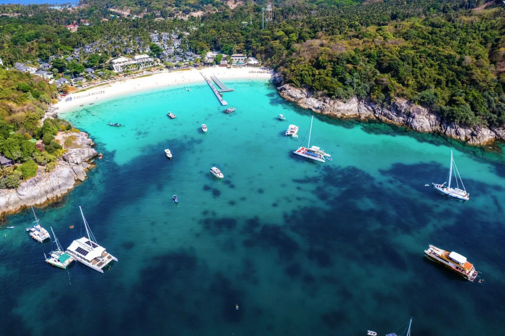

ยอดนิยม
เกาะพีพี + อ่าวมาหยา 1 วัน
ล่องสปีดโบ๊ทสู่เกาะพีพี ชมอ่าวมาหยาจากภาพยนตร์ The Beach ดำน้ำตื้นชมปะการังที่อ่าวปิเละ แวะอ่าวลิงและถ้ำไวกิ้ง รวมอาหารกลางวันและอุปกรณ์ดำน้ำ
฿1,300 / ท่าน
สอบถาม
ผู้เชี่ยวชาญการเที่ยวภูเก็ตโดยคนท้องถิ่น
ภูเก็ตไม่ได้มีแค่ทะเล
ตั้งแต่ภูเก็ต พังงา เขาหลัก เขาสก เกาะพีพี ไปจนถึงหมู่เกาะสิมิลัน สัมผัสอันดามันในมุมที่คนท้องถิ่นรู้จัก ผ่านเส้นทางและประสบการณ์ที่คัดสรรให้เหมาะกับสไตล์การเดินทางของคุณ
เลือกตามสไตล์ที่ชอบ
ตั้งแต่เกาะระดับโลกไปจนถึงตรอกเมืองเก่าที่คนภูเก็ตกินกันเอง เลือกหมวดที่อยากไปได้เลย
ค้นหาภูเก็ตของคุณ
ตอบ 3 คำถามสั้น ๆ แล้วเราจะแนะนำประสบการณ์ภูเก็ตที่เหมาะกับสไตล์การเที่ยวของคุณ
เล่นเกมสั้น ๆ แค่ 3 คำถาม แล้วเราจะจับคู่ประสบการณ์ภูเก็ตที่ใช่ที่สุดสำหรับคุณ ไม่มีคำตอบผิด
ใช้เวลาไม่ถึง 1 นาที · ไม่ต้องกรอกข้อมูล
กำลังจับคู่ทริปที่ใช่ให้คุณ…
แพ็คเกจที่แนะนำสำหรับคุณ
ทัวร์และกิจกรรมทั้งหมด
ล่องสปีดโบ๊ทสู่เกาะพีพี ชมอ่าวมาหยาจากภาพยนตร์ The Beach ดำน้ำตื้นชมปะการังที่อ่าวปิเละ แวะอ่าวลิงและถ้ำไวกิ้ง รวมอาหารกลางวันและอุปกรณ์ดำน้ำ

เที่ยวเกาะกระบี่แบบวันเดย์ทริป เดินสันทรายทะเลแหวกที่เชื่อมเกาะยามน้ำลด ดำน้ำตื้นที่เกาะปอดะ และชมหน้าผาหินปูนชื่อดังที่ไร่เลย์

ดำน้ำตื้นชมปะการังน้ำตื้นที่สมบูรณ์ที่สุดแห่งหนึ่งของไทย พักผ่อนบนหาดทรายขาวน้ำใส และเยี่ยมชมหมู่บ้านชาวเลมอร์แกน

ล่องเรือสู่เกาะห้อง กระบี่ เล่นน้ำและดำน้ำตื้นในลากูนสีเขียวมรกตที่เงียบสงบ พักผ่อนบนหาดทรายขาว และชมหน้าผาหินปูนสูงตระหง่านในเขตอุทยานฯ ธารโบกขรณี
พายเรือแคนูในถ้ำลอด ชมเขาตะปู แวะเกาะปันหยี หมู่บ้านกลางน้ำ เลือกได้ทั้งสปีดโบ๊ทและเรือใหญ่

หาดทรายขาวน้ำใสที่ใกล้ภูเก็ตที่สุด เหมาะกับครอบครัวและมือใหม่ดำน้ำตื้น เลือกเรือคาตามารันหรือสปีดโบ๊ท

ทริปเต็มวันถึงค่ำ ดำน้ำตื้นหลายจุด ดูพระอาทิตย์ตกกลางทะเล ปิดท้ายด้วยแพลงก์ตอนเรืองแสงในน้ำ

น้ำใสระดับโลก ดำน้ำตื้นจุดยอดนิยม ขึ้นจุดชมวิวเกาะแปด อุทยานเปิดเฉพาะ ต.ค.–พ.ค. ควรจองล่วงหน้า

ขับเจ็ตสกีเองข้าม 8 เกาะรอบภูเก็ตพร้อมไกด์นำขบวน 5 ชั่วโมงเต็ม รวมประกันและอุปกรณ์ครบ

ไม่ต้องมีใบอนุญาต ครูฝึกดูแลหนึ่งต่อสอง ลงจริงที่จุดปะการังรอบเกาะราชา รวมอุปกรณ์และรูปใต้น้ำ

พาราเซลลิ่ง บานาน่าโบ๊ท และซีวอล์กเกอร์ เลือกเล่นแยกชิ้นหรือรวมแพ็ก จองผ่านเราได้ราคาเดียวกับหน้าหาดแต่ไม่ต้องต่อรอง

แพ็กคู่ยอดนิยมสำหรับสายผจญภัย ล่องแก่งระยะ 5 กิโลเมตร ต่อด้วยซิปไลน์ข้ามหุบเขา รวมรถรับส่งและอาหารกลางวัน

ขับ ATV เองบนเส้นทางดินในสวนยางและป่าเขา จบที่จุดชมวิวเห็นทะเลอันดามันเต็มตา เลือกได้ 1 หรือ 2 ชั่วโมง

เลือกจำนวนฐานได้ตามความกล้า ตั้งแต่คอร์สสั้นสำหรับมือใหม่ถึงคอร์สเต็มพร้อมสะพานเชือกและกำแพงปีน

เลือกได้ทั้งแบบเยี่ยมชมและให้อาหาร อาบน้ำช้าง หรือว่ายน้ำกับช้าง เราเลือกแคมป์ที่ดูแลช้างดีให้เท่านั้น

โชว์วัฒนธรรมไทยระดับโลกพร้อมช้างและเทคนิคเวทีอลังการ รอบ 21:00 น. ใช้เวลา 70 นาที เลือกเพิ่มบุฟเฟต์ได้

ธีมพาร์กแสงสีที่ใหม่ที่สุดของภูเก็ต ขบวนพาเหรดและโชว์บนเวทีใหญ่ รอบ 20:30 น. ความยาว 1 ชั่วโมง

คาบาเรต์โชว์ที่ดังที่สุดของภูเก็ต มีรอบทุกวัน เลือกที่นั่ง VIP ใกล้เวทีหรือที่นั่งปกติได้

โชว์โลมาในโรงละครในร่ม เหมาะกับครอบครัวที่มีเด็กเล็ก มีหลายรอบต่อวัน ปิดทุกวันจันทร์

โชว์ศิลปวัฒนธรรมไทยบนเวทีขนาดใหญ่ พร้อมหมู่บ้านไทยให้เดินชมก่อนเข้าโรงละคร เลือกเพิ่มบุฟเฟต์มื้อเย็นได้

เดินเมืองเก่ากับไกด์ที่โตที่นี่ กินหมี่หุ้นร้านที่คนภูเก็ตต่อคิว ฟังเรื่องตึกชิโนฯ จบที่ร้านกาแฟในบ้านเก่า

ตื่นเช้าไปตลาดที่คนภูเก็ตซื้อของกินเอง ต่อด้วยหมู่บ้านชาวเลราไวย์ ฟังเรื่องจากคนในชุมชนโดยตรง

คนขับถือป้ายชื่อรอที่ประตูผู้โดยสารขาเข้า ราคาเหมาต่อคันไม่คิดต่อหัว เลือกรถเก๋ง รถตู้ หรือรถตู้ใหญ่

ตั๋วเรือไปพีพี ลันตา และเกาะใกล้เคียง เลือกเฟอร์รี่แบบประหยัดหรือสปีดโบ๊ทแบบเร็ว รวมรถรับที่โรงแรมได้
เรารับจองตั๋วเครื่องบินทั้งในและต่างประเทศ
แจ้งวันเดินทางกับเราผ่านทาง LINE เดี๋ยวเราจัดให้ บริการนี้ให้บริการผ่านแชทเท่านั้น
Beyond the Shore
นี่คือเหตุผลที่ Nessy รู้จักภูเก็ตต่างจากบริษัททัวร์ทั่วไป เราพาคุณไปพบผู้คน สถานที่ และเรื่องราวที่อยู่นอกเส้นทางเดิม ๆ
พบกับ Local Guides ร้านเล็ก ๆ และผู้คนที่ทำให้ภูเก็ตมีชีวิต
Hidden spots ชุมชนท้องถิ่น และสถานที่ที่มีเรื่องราว
ประสบการณ์ที่ไม่ได้เกิดจากการเดินตาม Itinerary สำเร็จรูป
ภูเก็ตในแบบของเรา
ทิ้งเช็คลิสต์ที่ต้องเก็บให้ครบ แล้วมาสัมผัสจังหวะชีวิตจริงของคนภูเก็ต
ตั้งแต่มื้อเช้าเจ้าดัง เดินทอดน่องย่านเมืองเก่า ไปจนถึงชมวิวยามเย็นที่แหลมพรหมเทพ
ทำไมต้องเดินทางกับเรา
ไม่ใช่แค่บริษัททัวร์ แต่คือทีมคนภูเก็ตที่อยู่ที่นี่จริง ๆ
และนี่คือสิ่งที่คุณจะได้จากทริปของเรา
รู้ว่าควรไปที่ไหน และควรไปตอนไหน มีออฟฟิศจริงที่ป่าตอง และรู้ว่าวันไหนทะเลไม่สวย
ทำงานร่วมกับ Local Guides เจ้าของเรือ และธุรกิจครอบครัวในพื้นที่โดยตรง ไม่มีคนกลางมาคั่น
ตั้งแต่ทักมาจนจบทริป คุณคุยกับทีมเดิมตลอด มีปัญหาหน้างาน เราไปถึงได้จริง
Real Phuket Moments
ชมคลิปแนะนำ
คลิปสั้น ๆ ที่รวมเส้นทาง ผู้คน และช่วงเวลาเล็ก ๆ ที่เรารักที่สุดของอันดามัน

เสียงจากผู้เดินทาง